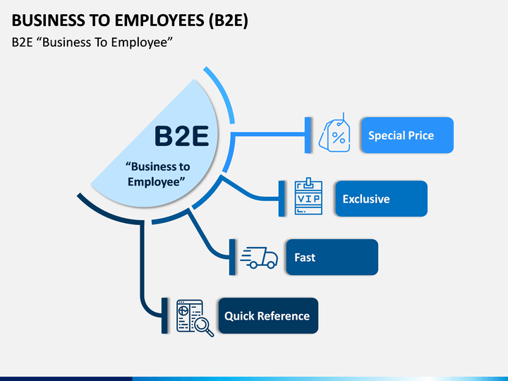

PRINCIPAL
B2B
B2C
C2C
B2G
C2G
ECOMMERCE DE PRODUCTOS DIGITALES
ECOMMERCE DE INFOPRODUCTOS
ECOMMERCE DE SERVICIOS
ECOMMERCE SOFTWARE AS A SERVICE (SAAS)
ECOMMERCE OPEN SOURCE
B2E
BUSINESS-TO-EMPLOYEES(B2E)
Es una plataforma que utilizan las empresas para
mantener una relación de comunicación
interna con sus empleados.
También se puede considerar como una modalidad
del comercio electrónico que usan las empresas
para mantener una relación comercial de forma
interna con sus trabajadores.
Para poderlo implementar se utiliza una plataforma
online de intranet, que funciona como una
web corporativa. De manera que el proceso de
comunicación se usa en forma interna para hacer
más eficiente las tareas de la empresa en su relación
con los empleados, pero además puede
usarse como una plataforma comercial entre estos.
